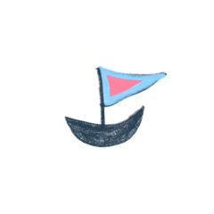

start here
Kita-Sora 北空
Exploring outward, settling inward.


hi, i'm Lynn.
Kita-Sora means "the northern sky." it started with half a month in a small Hokkaido town called Yakumo, where i learned what it feels like to come home to myself.
these days i write letters about leaving the default path, moving through places, and slowly building a life that's actually mine, with the numbers and the feelings.
a bigger, hand-drawn version of this little world is on its way. until then, the letters are where it all lives.
— Lynn